용접산업기사 (2010-03-07 기출문제)
1과목: 용접야금 및 용접설비제도
1. 이종의 원자가 결정격자를 만드는 경우 모재원자보다 작은 원자가 고용할 때 모재원자의 틈새 또는 격자결함에 들어가는 경우의 구조는?
- 치환형고용체
- 변태형고용체
- 침입형고용체
- 금속간고용체
(정답률: 85%)

2. 연강용 피복 아크 용접봉의 심선에 주로 사용되는 것은?
- 주강
- 합금강
- 저탄소림드강
- 특수강
(정답률: 58%)
3. 철-탄소 합금에서 6.67% C를 함유하는 탄화철 조직은?
- 시멘타이트
- 레데브라이트
- 페라이트
- 오스테나이트
(정답률: 48%)
4. 강의 기계적 성질 중에서 온도가 삼온보다 낮아지면 충격치가 감소되는 현상은?
- 저온취성
- 청열인성
- 상온취성
- 적열인성
(정답률: 79%)
5. 주철의 종류 중 칼슘이나 규소를 첨가하여 흑연화를 촉진시켜 미세 흑연을 균일하게 분포시키거나 백주철을 열처리하여 연신율을 향상시킨 주철은?
- 반 주철
- 회 주철
- 구상 흑연 주철
- 가단 주철
(정답률: 25%)
6. 공구강이나 자경성이 강한 특수강을 연화 풀림 하는데 적합한 방법은?
- 응력 제거 풀림
- 항온 풀림
- 구상화 풀림
- 확산 풀림
(정답률: 50%)
7. 가공경화에 의해 발생된 내부응력의 원자배열 상태는 변하지 않고 감소하는 현상은?
- 편석
- 회복
- 재결정
- 조질
(정답률: 27%)
8. KS 규격의 연강용 피복 아크 용접봉 중 철분 산화 티탄계는?
- E4311
- E4324
- E4327
- E4316
(정답률: 57%)
9. 금속재료를 일정 온도에서 일정 시간 유지 후 냉각시킨 조직이며 주조, 단조, 기계가공 및 용접 후에 잔류응력을 제거하는 풀림방법은?
- 연화 풀림
- 구상화 풀림
- 응력제거 풀림
- 항온 풀림
(정답률: 82%)
10. 피복 아크 용접에서 용접입열(weld heat input)을 표시 하는식 중 옳은 것은? (단, H : 용접입열(Joule/cm), E : 아크전압(V), I : 아크전류(A), V : 용접속도(cm/min))
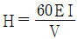
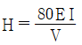
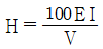
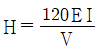
(정답률: 96%)
11. 다음 용접기호에서 보조기호 도시는?
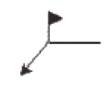
- 필릿 용접기호
- 원둘레 용접기호
- 현장 용접기호
- 플러그 용접기호
(정답률: 96%)
12. 건설 또는 제조에 필요한 정보를 전달하기 위한 도면으로 제작도가 사용되는데, 이 종류에 해당되는 것으로만 조합된 것은?
- 계획도, 시공도, 견적도
- 설명도, 장치도, 공정도
- 상세도, 승인도, 주문도
- 상세도, 시공도, 공정도
(정답률: 73%)
13. 용접 보조기호 없이 기본기호로만 표시하는 경우 보조기호가 없는 것의 가장 가까운 의미는?
- 기본기호의 조합으로써 용접부 표면 형상을 나타내기가 어렵다는 의미이다.
- 보조기호와 기본기호의 중복에 의해 보조기호를 생략한 경우이다.
- 용접부 표면을 자세히 나타낼 필요가 없다는 것을 의미한다.
- 필요한 보조 기호화가 매우 곤란한 경우임을 의미한다.
(정답률: 44%)
14. 다음 용접부 기호를 올바르게 설명한 것은?
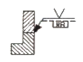
- 화살표 반대쪽 한면 V형 맞대기 용접한다.
- 화살표 쪽의 이면비드를 기계절삭에 의한 가공을 한다.
- 화살표 반대쪽에 제거 가능한 이면 판재를 사용한다.
- 화살표 반대쪽에 영구적인 덮개판을 사용한다.
(정답률: 62%)
15. KS의 부문별 분류기호 중 B에 해당하는 분야는?
- 기본
- 기계
- 전기
- 조선
(정답률: 92%)
16. 도면에서 해칭하는 방법을 올바르게 설명한 것은?
- 해칭은 주된 단면도의 주된 중심선에 대하여 55°로 가는 실선의 등간격으로 긋는다.
- 해칭은 주된 단면도의 주된 중심선에 대하여 35°로 가는 실선의 등간격으로 긋는다.
- 해칭은 주된 중심선 또는 단면도의 주된 외형선에 대하여 35°로 가는 점선의 등간격으로 긋는다.
- 해칭은 주된 중심선 또는 단면도의 주된 외형선에 대하여 45°로 가는 실선의 등간격으로 긋는다.
(정답률: 64%)
17. CAD 시스템의 도입에 따른 일반적인 적용효과에 해당되지 않는 것은?
- 품질 향상
- 원가 절감
- 경쟁력 강화
- 신뢰성 약화
(정답률: 74%)
18. 도면의 양식 및 도면 접기에 대한 설명 중 틀린 것은?
- 도면의 크기 치수에 따라 굵기 0.5mm 이상의 실선으로 윤곽선을 그린다.
- 도면의 오른쪽 아래 구석에 표제란을 그리고 도면번호, 도명, 기업명, 책임자 서명, 도면 작성년 월 일, 척도 및 투상법을 기입한다.
- 도면은 사용하기 편리한 크기와 양식을 임의대로 중심마크를 설치한다.
- 복사한 도면을 접을 때 그 크기는 원칙으로 210×297(A4의 크기)로 한다.
(정답률: 88%)
19. 다음 용접부를 기호로 표시한 것이다. 용접부의 모양으로 옳은 것은?
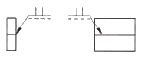
- 한쪽 플랜지형
- I형
- 플러그
- 필릿
(정답률: 70%)
20. 정투상에서 투상면에 수직한 직선과 평면은 평화면에 어떤 투상으로 나타나는가?
- 직선은 점으로, 평면은 직선으로 나타난다.
- 직선은 실제길이로, 평면은 단축되어 나타난다.
- 직선은 실제길이보다 짧게, 평면은 실제형태로 나타난다.
- 직선은 점으로, 평면은 단축되어 나타난다.
(정답률: 52%)
2과목: 용접구조설계
21. 다음 그림과 같은 용접부에 인장하중이 5000kgf 작용할 때 인장응력은 몇 kgf/mm2 인가?
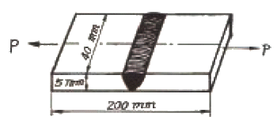
- 20
- 25
- 30
- 35
(정답률: 54%)
22. 용접봉 종류 중 피복제에 석회석이나 형석을 주성분으로 하고 용착금속 중의 수소 함유량이 다른 용접봉에 비해서 1/10 정도로 현저하게 낮은 용접봉은?
- E4301
- E4303
- E4311
- E4316
(정답률: 76%)
23. 용접후 열처리(PWHT)의 목적이 아닌 것은?
- 용접 열영향부의 경화
- 파괴인성의 향상
- 함유가스의 제거
- 형상치수의 안정
(정답률: 37%)
24. 탐촉자를 이용하여 결함의 위치 및 크기를 검사하는 비파괴시험법은?
- 방사선투과시험
- 초음파탐상시험
- 침투탐상시험
- 자분탐상시험
(정답률: 71%)
25. 용융금속의 이행은 용적의 이행상태로 분류하는데 이에 속하지 않는 것은?
- 글로뷸러형
- 스프레이형
- 단락형
- 원자형
(정답률: 48%)
26. 용접이음에서 취성파괴의 일반적 특징에 대한 설명 중 틀린 것은?
- 온도가 높을수록 발생하기 쉽다.
- 항복점 이하의 평균응력에서도 발생한다.
- 파괴의 기점은 응력, 변형이 집중하는 구조적 및 형상적인 불연속부에서 발생한다.
- 거시적 파면상황은 판표면에 거의 수직이다.
(정답률: 54%)
27. 용접선이 교차를 피하기 위하여 부재에 파 놓은 부채꼴의 오목 들어간 부분을 무엇이라고 하는가?
- 스켈롭(scallop)
- 노치(notch)
- 오손(pick up)
- 너깃(nugget)
(정답률: 50%)
28. 겹처진 2부재의 한쪽에 둥근 구멍 대신에 좁고 긴 홈을 만들어 놓고 그 곳을 용접하는 용접법은?
- 겹치기용접
- 플래지용접
- T형 용접
- 슬롯용접
(정답률: 70%)
29. 설계자는 구조물의 설계뿐만 아니라 제작공정의 제반사항을 알아야 용접비용과 품질을 좌우하는 용접요령을 지시할 수 있는데, 설계자가 알아야 할 요령 중 맞지 않는 것은?
- 용접기의 1차 및 2차 케이블의 용량이 충분할 것
- 가능한 아래보기 자세로 용접하도록 할 것
- 가능한 짧은 시간에 용착량이 많게 용접할 것
- 가능한 낮은 전류를 사용할 것
(정답률: 60%)
30. 용접제품의 정밀도와 신뢰성을 향상시키고 용접 작업능률을 높이기 위하여 사용되는 일종의 용접용 고정구를 무엇이라고 하는가?
- 컴비네이션 셋
- 핫 스타트 장치
- 엔드 탭
- 지그
(정답률: 70%)
31. 용접 작업시 용접 길이의 짧게 나누어 간격을 두면서 용접하는 방법으로 피 용접물 전체에 변형이나 잔류 응력이 적게 발생하도록 하는 용착법은?
- 대칭법
- 도열법
- 비석법
- 후진법
(정답률: 69%)
32. 용접 후 언더컷의 결함보수 방법으로 적합한 것은?
- 단면적이 작은 용접봉을 사용하여 보수 용접한다.
- 정지 구멍을 뚫어 보수 용접한다.
- 절단하여 다시 용접한다.
- 해머링 하여준다.
(정답률: 55%)
33. 판재의 두께 8mm를 아래보기 자세로 15m, 판재의 두께 15mm를 수직 맞대기 용접자세로 8m 용접하였다. 이 때 환산 용접길이는 얼마인가? (단, 아래보기 맞대기 용접의 환산계수는 1.32이고, 수직맞대기 용접의 환산 계수는 4.32이다.)
- 44.28m
- 48.56m
- 54.36m
- 61.24m
(정답률: 41%)
34. 용접 시공 전에 준비해야 할 사항 중 틀린 것은?
- 이음 면이 정확히 되어있나 확인한다.
- 덧붙임 용접시는 마멸부분을 제거하지 않고, 그대로 이용하여 용접한다.
- 시공 면에 기름, 녹 등을 제거한다.
- 습기는 가열하여 제거한다.
(정답률: 90%)
35. 용접전류가 과대하고, 아크길이가 길며 운봉속도가 빠른 용접일 때 가장 일어나기 쉬운 용접결함은?
- 언더컷
- 오버랩
- 융합불량
- 용입불량
(정답률: 69%)
36. 용접 순서를 결정하는데 기준이 되는 유의사항으로 틀린 것은?
- 수축이 작은 이음은 먼저하고 수축이 큰 이음은 가급적 뒤에 한다.
- 같은 평면 안에 많은 이음이 있을 때에는 수축은 가급적 자유단으로 보낸다.
- 용접물의 중심에 대하여 항상 대칭으로 용접을 진행시킨다.
- 용접물의 중립축을 생각하고 그 중립축에 대하여 용접으로 인한 수축력 모멘트의 합이 0 이 되도록 한다.
(정답률: 72%)
37. 그림과 같은 V형 맞대기 용접에서 굽힘 모멘트(Mb)가 10000 kgf·cm 작용하고 있을 때, 최대 굽힘 응력은 몇 kgf/cm2 인가? (단, ℓ = 150mm, t = 20mm 이고 완전 용입일 때이다.)
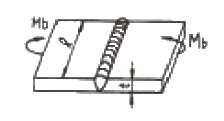
- 10
- 1000
- 100
- 10000
(정답률: 60%)
38. 다음과 같은 필릿 용접 이음부에 하중 P가 작용할 때 용접부에 발생하는 응력의 크기를 구하는 식은? (단, 필릿 용접부에 작용하는 응력은 같다.)
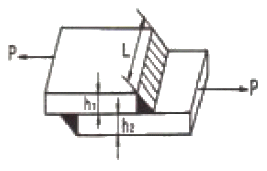
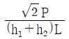
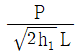
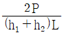
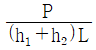
(정답률: 41%)
39. 그림과 같은 V형 맞대기 용접에서 각부의 명칭 중에서 옳지 못한 것은?
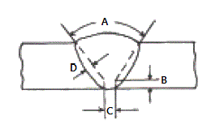
- A는 홈 각도
- B는 루트 면
- C는 루트 간격
- D는 오버랩
(정답률: 83%)
40. 파괴시험 방법의 종류 중에서 기계적 시험에 속하지 않는 것은?
- 인장 시험
- 굽힘 시험
- 충격 시험
- 파면 시험
(정답률: 52%)
3과목: 용접일반 및 안전관리
41. 모재를 녹이지 않고 접합하는 것은?
- 가스 용접
- 피복 아크 용접
- 서브머지드 아크 용접
- 납땜
(정답률: 93%)
42. 가스용접에서 아세틸렌이 과잉으로 된 불꽃은?
- 중성산화불꽃
- 탄화불꽃
- 산화불꽃
- 중성불꽃
(정답률: 71%)
43. 가스용접에서 전진법과 후진법의 비교 설명으로 가장 올바르지 않은 것은?
- 용접속도는 후진법이 전진법보다 빠르다.
- 열이용률은 후진법이 전진법보다 좋다.
- 소요 홈 각도는 후진법이 전진법보다 크다.
- 용접변형은 후진법이 전진법보다 작다.
(정답률: 43%)
44. 가스 용접에서 팁이 막혔을 때 뚫는 방법 중 옳은 것은?
- 철판위에 가볍게 문지른다.
- 내화 벽돌위에 가볍게 문지른다.
- 팁 클러너로 제거한다.
- 가는 철사로 제거한다.
(정답률: 90%)
45. 가스절단 작업시 예열불꽃 세기의 영향을 맞게 설명한 것은?
- 예열불꽃이 강할 때 절단면이 거칠어진다.
- 예열불꽃이 강할 때 드래그기 증가한다.
- 예열불꽃이 강할 때 절단속도가 늦어진다.
- 예열불꽃이 강할 때 슬래그 중의 철 성분의 박리가 쉽다.
(정답률: 35%)
46. 아세틸렌가스 공급관로에 사용할 수 없는 재료는?
- 주철
- 스테인리스강
- 연강
- 구리
(정답률: 63%)
47. 다전극 서브머지드 아크 용접시 두 개의 전극 와이러를 각각 독립된 전원에 연결하는 방식은?
- 횡병렬식
- 횡직렬식
- 퓨즈식
- 텐덤식
(정답률: 40%)
48. 용접봉 홀더 200호로 접속할 수 있는 최대 홀더용 케이블의 도체 공칭 단면적은 몇 mm2 인가?
- 22
- 30
- 38
- 50
(정답률: 63%)
49. 용착속도(rate of deposition)를 올바르게 설명한 것은?
- 용접심선이 10분간에 용융되는 길이
- 용접심선이 1분간에 용융되는 중량
- 용접봉 혹은 심선의 소모량
- 단위시간에 용착되는 용착금속의 량
(정답률: 67%)
50. 용접 흄(fume)에 대해서 서술한 것 중 올바른 것은?
- 용접 흄은 인체에 영향이 없으므로 아무리 마셔도 괜찮다.
- 실내 용접 작업에서는 환기설비가 필요하다.
- 용접봉의 종류와 무관하며 전혀 위험은 없다.
- 용접흄은 입자성 물질이며, 가제마시크로 충분히 차단할 수가 있음으로 인체에 해가 없다.
(정답률: 89%)
51. 정격 2차 전류 200[A], 정격사용율 50%인 아크 용접기로 실제 150[A]의 전류로 용접할 경우 허용사용율은 약 몇 % 인가?
- 69
- 78
- 89
- 95
(정답률: 24%)
52. 일렉트로 슬래그 용접법의 원리는?
- 가스 용해열을 이용한 용접법
- 전기 저항열을 이용한 용접법
- 수중 압력을 이용한 용접법
- 비가열식을 이용한 용접법
(정답률: 87%)
53. 가스 절단 작업에서 프로판가스와 아세틸렌가스를 사용하였을 경우를 비교한 사항 중 옳지 않은 것은?
- 포갬 절단 속도는 프로판 가스를 사용하였을 때가 빠르다.
- 슬래그 제거가 쉬운 것은 프로판가스를 사용하였을 경우이다.
- 후판 절단시 절단 속도는 프로판가스를 사용하였을 때가 빠르다.
- 산소는 아세틸렌가스가 프로판가스보다 약간 더 필요하다.
(정답률: 67%)
54. 스테인리스나 알루미늄 합금의 납땜이 어려운 가장 큰 이유는?
- 적당한 용제가 없기 때문에
- 강한 산화막이 있기 때문에
- 융점이 높기 때문에
- 친화력이 강하기 때문에
(정답률: 70%)
55. 역류, 역화, 인화 등을 막기 위해 사용하는 수봉식 안전기 취급시 주의사항이 아닌 것은?
- 수봉관에 규정된 선까지 물을 채운다.
- 안전기가 얼었을 경우 가스토치로 해빙 시킨다.
- 한 개의 안전기에는 반드시 한 개의 토치를 설치한다.
- 수봉관의 수위는 작업 전에 반드시 점검한다.
(정답률: 83%)
56. 무부하 전압 80V, 아크 전압 30V, 아크 전류 200A까지의 아크용접기의 역률을 계산하면? (단, 내부손실은 4kW 이다.)
- 80%
- 62.5%
- 90%
- 72.5%
(정답률: 63%)
57. CO2 아크 용접에서 인체 유해성분에 가장 영향을 미치는 가스는?
- 일산화탄소가스
- 황산가스
- 질소가스
- 메탄가스
(정답률: 69%)
58. TIG용접에 사용되는 전극의 조건 중 틀린 것은?
- 고 용융점의 금속
- 전자 방출이 잘되는 금속
- 열 전도성이 좋은 금속
- 전기 저항률이 큰 금속
(정답률: 48%)
59. 용접 전의 일반적인 준비사항에 해당되지 않는 것은?
- 제작 도면을 잘 이해하고 작업내용을 충분히 검토한다.
- 용착금속과 홈의 선택에 대하여 이해한다.
- 예열, 후열의 필요성 여부는 중요하지 않으므로 검토를 안해도 된다.
- 용접전류, 용접순서, 용접조건을 미리 정해둔다.
(정답률: 92%)
60. 아크 기둥의 전압을 올바르게 설명한 것은?
- 아크 기둥의 전압은 아크 길이에 거의 관계가 없다.
- 아크 기둥의 전압은 아크 길이에 거의 정비례하여 증가한다.
- 아크 기둥의 전압은 아크 길이에 거의 반비례하여 감소한다.
- 아크 기둥의 전압은 아크 길이에 거의 반비례하여 증가한다.
(정답률: 52%)